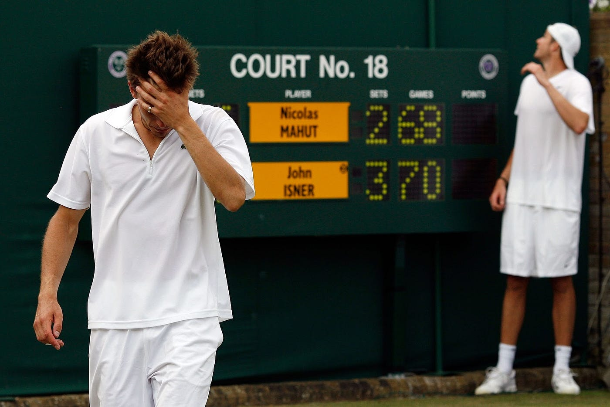
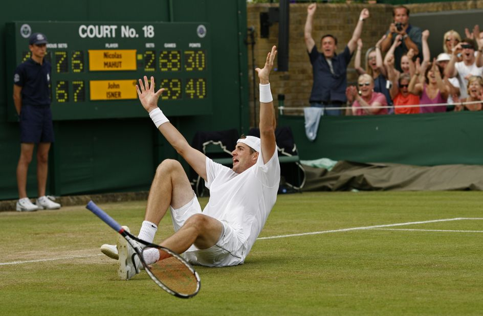
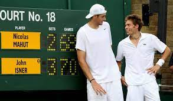

Longest Tennis Match - Wimbledon History Forever
  Photo: Collected
In the hallowed grounds of Wimbledon, where tradition meets triumph, history was etched in 2010 during a titanic clash between two tennis gladiators – John Isner and Nicolas Mahut.What transpired over three grueling days was nothing short of a spectacle, as the two athletes engaged in the longest tennis match ever recorded. This epic battle not only tested the physical limits of the players but also captivated the tennis world and fans worldwide.
Setting the Stage
The stage was set on Court 18, a relatively modest arena that would soon witness an extraordinary test of endurance and skill. The match began on June 22, 2010, in the first round of the Wimbledon Championships. John Isner, the towering American, faced off against the Frenchman Nicolas Mahut. Little did they know that their names would be forever etched in tennis lore.
A Battle of Attrition
From the opening serve, it became apparent that this was not an ordinary match. Isner and Mahut were evenly matched, with powerful serves and a relentless determination to outlast each other. The first set alone lasted an astonishing 8 hours and 11 minutes, breaking the previous record for the longest match in tennis history.
Intense Drama
As the hours ticked by, the physical and mental toll on the players became increasingly evident.The match evolved into a test of stamina, willpower, and mental resilience. Each game became a mini-battle, with both players refusing to yield even a single point easily.
The drama reached its pinnacle on the second day of the match. With darkness falling and the score locked at 59-59 in the fifth set, the match was suspended due to inadequate lighting. The players had already shattered records, and yet, there was no clear victor in sight. The resumption on the third day brought an air of anticipation as fans flocked to witness history in the making.
Final Triumph
Finally, after a staggering 11 hours and 5 minutes of play,John Isner emerged victorious with a final score of 70-68 in the fifth set.
The match concluded with a collective sigh of relief from players, spectators, and officials alike. Isner and Mahut had not only rewritten the record books but had also displayed an extraordinary level of sportsmanship and resilience.
The Isner-Mahut marathon not only left an indelible mark on Wimbledon but also reshaped the way tennis matches were perceived. The record-setting encounter prompted discussions about the need for a fifth-set tiebreaker in Grand Slam matches to prevent such extreme contests. In 2019, Wimbledon introduced a tiebreaker at 12-12 in the final set, partly in response to the historic Isner-Mahut match.
The marathon tennis match of Wimbledon 2010 will forever be etched in the annals of tennis history as a testament to the indomitable spirit of athletes.Isner and Mahut's epic battle showcased the physical and mental fortitude required to compete at the highest level. While records are made to be broken, this particular record stands as a symbol of resilience, endurance, and the unyielding pursuit of victory on the hallowed grass courts of Wimbledon.